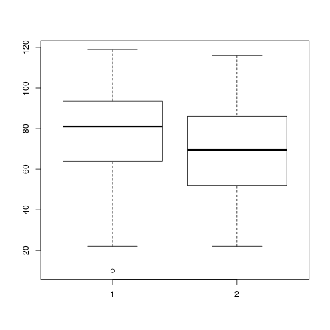

Basic statistics
Table of Contents
- 1. Practical 1
- 2. Practical 2
- 2.1. Which age occurs most often?
- 2.2. Find out what’s the mean, the median, the mode, the range and the standard deviation of the Proficiency Score in your data.
- 2.3. Find out what is the minimum age, the maximum age, the mean age and the standard deviation.
- 2.4. What is the most frequently occurring proficiency score
- 2.5. What is the z-score of Participant 13?
- 2.6. Which group has higher proficiency scores, the male or the female participants?
- 2.7. Which group scored more homogeneously?
- 2.8. Boxplots
- 2.9. Part B
- 3. Practical 3
- 3.1. Part A
- 3.1.1. Descriptives and graphs for groups
- 3.1.2. Which performed best? And which group performed most homogeneously?
- 3.1.3. Which teacher performed best?
- 3.1.4. Boxplot
- 3.1.5. Grades
- 3.1.6. How many students passed?
- 3.1.7. Checking for normality
- 3.1.8. Zscores
- 3.1.9. Impressions about teacher gorup
- 3.1.10. The Null hypothesis
- 3.1.11. Defining the variables
- 3.1.12. Running the test
- 3.2. Part B
- 3.1. Part A
1 Practical 1
Firs we begin be importing our dataset. We have to use an additional library to read an *.xlsx file. After that we assign names to the columns. And we take a look at the first rows of the dataset to see what it looks like.
require(readxl)
data <- read_excel("./data/p1.xlsx")
names(data) <- c("id","age","sex","profs")
head(data)
| 1 | 16 | 1 | 91 |
| 2 | 20 | 2 | 58 |
| 3 | 24 | 1 | 52 |
| 4 | 22 | 2 | 45 |
| 5 | 18 | 1 | 78 |
| 6 | 14 | 2 | 88 |
1.1 Question 1
Does the proficiency score increase or decrease with age?
To answer this question we might simply plot both age and proficiency score and see if there is any clear indication.
plot(data$age,data$profs)

Well, yes, from the scatter plot we built we can see that as the age increases the proficiency decreases.
1.2 Question 2
Is there a difference in proficiency score between female and male participants?
aggregate(data$profs, by=list(Category=data$sex), FUN=mean)
| 1 | 75.5333333333333 |
| 2 | 63.6666666666667 |
1.3 Question 3
Is there an overall difference in age between male and female participants?
m <- data$age[data$sex == 1] f <- data$age[data$sex == 2] boxplot(m,f)
aggregate(data$age, by=list(Category=data$sex), FUN=mean)
| 1 | 20.1333333333333 |
| 2 | 20.5333333333333 |
2 Practical 2
require(readxl)
data <- read_excel("./data/p1.xlsx")
names(data) <- c("id","age","sex","profs")
str(data)
2.1 Which age occurs most often?
which.max(tabulate(data$age))
16
2.2 Find out what’s the mean, the median, the mode, the range and the standard deviation of the Proficiency Score in your data.
mean(data$profs)
69.6
median(data$profs)
69
which.max(tabulate(data$profs))
59
range(data$profs)
| 33 |
| 97 |
sd(data$profs)
16.4434244273069
2.3 Find out what is the minimum age, the maximum age, the mean age and the standard deviation.
min(data$age)
14
max(data$age)
27
mean(data$age)
20.3333333333333
sd(data$age)
3.56547944576335
sd(data$age)
3.56547944576335
2.4 What is the most frequently occurring proficiency score
which.max(tabulate(data$profs))
59
2.5 What is the z-score of Participant 13?
scale(data$profs,center=TRUE, scale=TRUE)[13]
-0.462190830966998
2.6 Which group has higher proficiency scores, the male or the female participants?
aggregate(data$profs, by=list(Category=data$sex), FUN=mean)
| 1 | 75.5333333333333 |
| 2 | 63.6666666666667 |
2.7 Which group scored more homogeneously?
aggregate(data$profs, by=list(Category=data$sex), FUN=sd)
| 1 | 14.2421239721502 |
| 2 | 16.7871833197092 |
2.8 Boxplots
m <- data$profs[data$sex == 1] f <- data$profs[data$sex == 2] boxplot(m,f)

2.9 Part B
Provide the mean, the mode, the median, the range and the standard deviation.
a <- c(3, 4, 5, 6, 7, 8, 9) b <- c(6, 6, 6, 6, 6, 6, 6) c <- c(4, 4, 4, 6, 7, 7, 10) d <- c(1, 1, 1, 4, 9, 12, 14)
| 1 |
| 1 |
| 1 |
| 4 |
| 9 |
| 12 |
| 14 |
MySummary <- function(dataset) {
m = mean(dataset)
mode = which.max(tabulate(dataset))
med = median(dataset)
stdde = sd(dataset)
results <- c(m,mode,med,stdde)
return(results)
}
MySummary(a)
| 6 |
| 3 |
| 6 |
| 2.16024689946929 |
MySummary(b)
| 6 |
| 6 |
| 6 |
| 0 |
MySummary(c)
| 6 |
| 4 |
| 6 |
| 2.23606797749979 |
MySummary(d)
| 6 |
| 1 |
| 4 |
| 5.59761854124889 |
3 Practical 3
3.1 Part A
As always, we begin by importing the data and taking a quick look at the first rows to see what it looks like.
require(readxl)
data <- read_excel("./data/p3a.xlsx", col_names=TRUE,na="")[1:130,]
head(data)
| 1 | A | 1A | 10 | 5 | 5 | 7 | 4 | 2 | 4 | 14 | 5 | 5 | 5 | 0 | 5 | 0 | 0 | 4 | 12 |
| 2 | A | 1A | 12 | 5 | 4 | 8 | 4 | 4 | 5 | 18 | 5 | 0 | 5 | 0 | 0 | 5 | 0 | 4 | 17 |
| 3 | A | 1A | 10 | 4 | 5 | 6 | 2 | 3 | 0 | 8 | 0 | 5 | 5 | 0 | 5 | 0 | 0 | 4 | 11 |
| 4 | A | 1A | 18 | 5 | 6 | 8 | 5 | 3 | 4 | 15 | 5 | 5 | 5 | 0 | 5 | 0 | 5 | 4 | 12 |
| 5 | A | 1B | 20 | 5 | 6 | 7 | 5 | 4 | 4 | 19 | 5 | 5 | 5 | 0 | 5 | 0 | 0 | 5 | 13 |
| 6 | A | 1A | 16 | 5 | 6 | 8 | 6 | 3 | 1 | 19 | 0 | 0 | 5 | 0 | 5 | 0 | 0 | 4 | 11 |
Now we define the type of variables for teacher and group. More precisely, we want to define them as factors.
data$group <- as.factor(data$group) data$teacher <- as.factor(data$teacher) str(data)
Classes ‘tbl_df’, ‘tbl’ and 'data.frame': 130 obs. of 20 variables: $ Student#: chr "1" "2" "3" "4" ... $ teacher : Factor w/ 2 levels "A","B": 1 1 1 1 1 1 1 1 1 1 ... $ group : Factor w/ 5 levels "1A","1B","1C",..: 1 1 1 1 2 1 1 1 1 1 ... $ Q1 : num 10 12 10 18 20 16 10 7 20 11 ... $ Q2 : num 5 5 4 5 5 5 3 4 4 5 ... $ Q3 : num 5 4 5 6 6 6 4 6 6 5 ... $ Q4 : num 7 8 6 8 7 8 8 6 6 7 ... $ Q5 : num 4 4 2 5 5 6 5 3 6 6 ... $ Q6 : num 2 4 3 3 4 3 3 2 3 3 ... $ Q7 : num 4 5 0 4 4 1 3 0 4 2 ... $ Q8 : num 14 18 8 15 19 19 16 14 17 17 ... $ Q9 : num 5 5 0 5 5 0 0 0 5 5 ... $ Q10 : num 5 0 5 5 5 0 5 0 5 5 ... $ Q11 : num 5 5 5 5 5 5 5 5 5 5 ... $ Q12 : num 0 0 0 0 0 0 5 0 0 0 ... $ Q13 : num 5 0 5 5 5 5 5 0 5 0 ... $ Q14 : num 0 5 0 0 0 0 0 0 0 0 ... $ Q15 : num 0 0 0 5 0 0 0 0 5 0 ... $ Q16 : num 4 4 4 4 5 4 2 5 4 4 ... $ Q17 : num 12 17 11 12 13 11 11 2 8 12 ...
3.1.1 Descriptives and graphs for groups
Adding a TOTAL_score variable.
data$TOTAL_score <- rowSums(data[,4:20]) str(data$TOTAL_score)
num [1:130] 87 96 68 105 108 89 85 54 103 87 ...
3.1.2 Which performed best? And which group performed most homogeneously?
best <- aggregate(data$TOTAL_score, by=list(data$group), FUN=mean) best$Group.1[which.max(best$x)]
1B
more_homo <- aggregate(data$TOTAL_score, by=list(data$group), FUN=sd) more_homo$Group.1[which.min(more_homo$x)]
1C
3.1.3 Which teacher performed best?
byteacher <- aggregate(data$TOTAL_score, by=list(data$teacher), FUN=mean)
| A | 78.4 |
| B | 69.2928571428571 |
Teacher A
3.1.4 Boxplot
teacherA <- data$TOTAL_score[data$teacher == "A"] teacherB <- data$TOTAL_score[data$teacher == "B"] boxplot(teacherA,teacherB)

3.1.5 Grades
data$grade <- trunc(((data$TOTAL_score/143)*100)/10) str(data$grade)
num [1:130] 6 6 4 7 7 6 5 3 7 6 ...
3.1.6 How many students passed?
table(data$grade >= 6)
| FALSE | 86 |
| TRUE | 44 |
3.1.7 Checking for normality
x <- data$grade h<-hist(x, breaks=10, col="red", xlab="Grade", main="Histogram with normal curve of grades") xfit<-seq(min(x),max(x),length=40) yfit<-dnorm(xfit,mean=mean(x),sd=sd(x)) yfit <- yfit*diff(h$mids[1:2])*length(x) lines(xfit, yfit, col="blue", lwd=2)

3.1.8 Zscores
zgrades <- scale(data$grade,center=TRUE, scale=TRUE) round(zgrades[c(11,33,44,55)],2)
| 0.8 |
| -1.58 |
| 1.99 |
| 0.8 |
3.1.9 Impressions about teacher gorup
It seems to me that teacher A is a better one.
3.1.10 The Null hypothesis
There is no difference between the two groups.
3.1.11 Defining the variables
teacher is the independent variable.
3.1.12 Running the test
The default R's function assumes that there is non equal variance between the two groups. So we first check if that's the case, and in case the variance is equal, then we pass an additional argument to the function.
var(teacherA)
481.871186440678
var(teacherB)
554.467339544513
Well, at this point I don't know if this difference can be considered large enough to justify the use of the Welsh test. I'll run both.
t.test(teacherA,teacherB, var.equal=TRUE)$p.value
0.0250141709914793
t.test(teacherA,teacherB)$p.value
0.02426194067448
It is safe to reject the null hypothesis.
3.2 Part B
require(readxl)
data <- read_excel("./data/p3b.xlsx",na="")[1:130,]
colnames(data) <- c("partecipant","motivation","score")
str(data)
Classes ‘tbl_df’, ‘tbl’ and 'data.frame': 130 obs. of 3 variables: $ partecipant: num 1 2 3 4 5 6 7 8 9 10 ... $ motivation : chr "Low" "Low" "High" "Low" ... $ score : num 22 28 28 26 18 31 22 25 20 25 ...
Let's define Motivation as factor.
data$motivation <- as.factor(data$motivation) str(data$motivation)
Factor w/ 2 levels "High","Low": 2 2 1 2 2 2 2 1 1 1 ...
Ok, now we group the scores by motivation level.
bymotivation <- aggregate(data$score, by=list(data$motivation), FUN=mean)
| High | 24.1714285714286 |
| Low | 23.2 |
Good. There is a difference. Now we have to understand if this difference is significative or not.
low <- data$score[data$motivation == "Low"] high <- data$score[data$motivation == "High"] round(t.test(low,high)$p.value,digits=2)
0.21
No, with this p value the difference can not be considered significative.